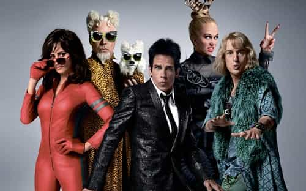

is an aspiring philosopher king, living the dream, travelling the world, hoarding FRNs and ignoring Americunts. He is a European at heart, lover of Latinas, and currently residing in the USA.


Women’s fashion magazine Elle has decided to stop focusing on its four letter title, French for “Her,” and has placed Hari Nef, a 23-year-old man who graduated from the theater program at Columbia University last year on its September, 2016 cover. Hari was not available for comment, and therefore I am unable to confirm whether this is masterful acting by the cunning theater major Hari, able to troll photographers, makeup artists, editors, and publishers into believing he is a hot woman, or the staff of top selling Elle magazine forgetting what their nameplate means.
More photoshop needed on the adam’s apple
Hari grew up in a single parent home in Massachusetts. His mother was a saleswoman, and he expressed some discomfort as a teenager, and after moving to NYC to study drama at Columbia, began dressing in “genderless clothes” and upon graduation landed a modeling gig and performed his first catwalk in 2015 during New York Fashion Week.
Clearly a man in makeup
Apparently, Hari still has most of the associated cues of being a male. He states:
“I could have hidden in Boston and lived at home for 3 years, gone through my transition, taken voice lessons to make my voice more feminine, gotten gender reassignment surgery, and spent time to complete my transition, but I didn’t want to wait. I wanted to be in the world,”
He states that he still sounds, acts, and looks like a man, and likely has kept the frank and beans like role model Bruce.

I am woman, hear me.. haha oh I can’t even finish it
Hari is attracted to and dates other men, stating
“in an ideal world, I wouldn’t have to change my body. I wouldn’t have to do all this stuff. I wouldn’t have to be pretty, or feminine, and people would respect that.”
Well, I wouldn’t go so far as to respect anything besides your privacy, but yes, if you just shut up and quietly lived your gay life without calling attention to yourself, and without the theatrics of pretending to actually be female, or “gender shifting” or any of the other 31 flavors of the month, then many people wouldn’t have a problem with you.

As recently as 15 years ago, this would be 100% pure humor. While I did chuckle at this story, and several of the photos are rather humorous, the fact is, today, this is taken seriously by much of America. As the film Zoolander parodied, models are not always dressed in the most feminine of clothing, and indeed many models have an androgynous look.
But the culture is changing so rapidly, that a post-millennial kid today would be confused by the plot of many top films of recent memory, such as Silence of the Lambs, which purposefully made the mass murderer Buffalo Bill a cross dresser, reinforcing his depravity and mental illness.
Zero humor at all in this scene if you are under 25
But today, a man dressing as a woman is not seen as silly or humorous, as it has throughout most of Western history, but a Proud and Strong and Brave Womyn Expressing Her Inner Strength and Spirit. While 2001’s Zoolander was a critical and box office success, earning over $30 million in profit from theater sales alone, 2016’s sequel Zoolander 2 was a commercial failure, only barely covering its costs of production. Add humor to another item in the long list of things feminism has killed.
The Letters are apparently still too small for some staff to see
Elle Magazine (“Her” Magazine) is owned by a French conglomerate, and the American version is published by Hearst Media, a privately held and controversial publisher founded by William Randolph Hearst, that once held a monopoly on major media and today owns interests in hundreds of magazines, newspapers, and TV stations reaching 20% of US viewers, including ESPN, who has worked closely with the NFL in turning football gay. One can look into the history and background of the major media and see the common source which creates this garbage.
Some days I feel like a woman, others like livestock
While there will certainly be backlash as elites attempt to define to us what is beauty, what is female, and what is good, the end result is that the vast majority of post-millennials will succumb to this propaganda and never know the truth. When the majority of their classmates are fat, gross, prepubescently-sexually active, and genderqueer, they will never be exposed to real beauty.
While corporations like Elle can save money by employing mentally ill workers that don’t have to be told to “look confused and depressed”, they are destroying the basic biological imperatives of humanity. Hari Nef has already been hired for television work and will be coming to a network near you soon. Throw away your TV and tune out the offensive degenerate media.
Read More: The Theory Of Evolution Does Not Apply To Modern Human Beings